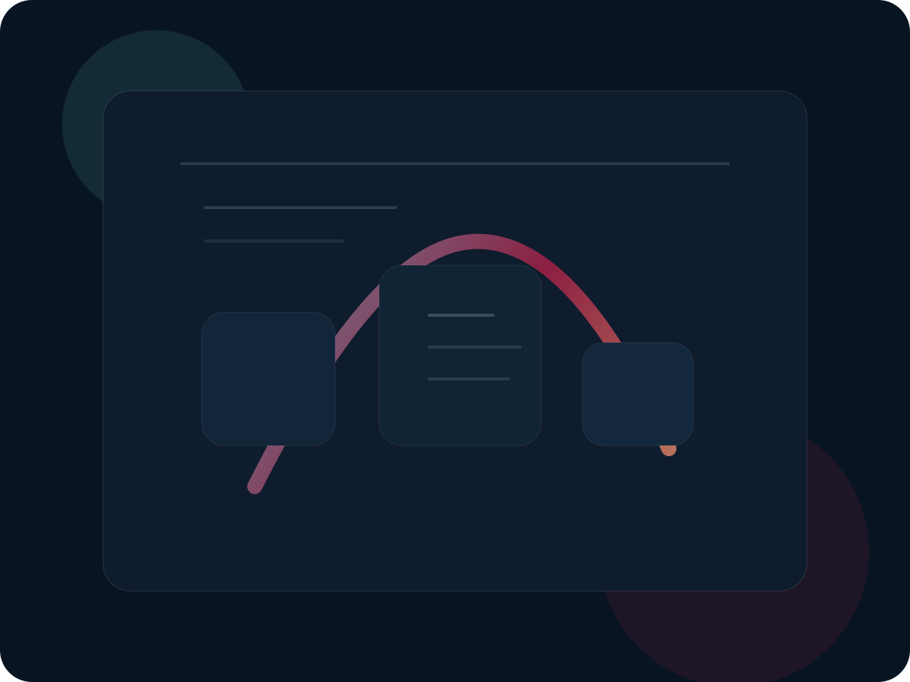

Research-minded systems
Work in this lane centers on practical software, AI-assisted tools, and systems designed for real use rather than hype cycles.
Avery Logic Works is an independent studio focused on thoughtful software, AI systems, creative tools, and future releases designed to be useful, legible, and worth coming back to. Some work can be shared early. Some stays private until it is ready. The goal is not noise. The goal is building things that matter.
This site is intentionally framed as a founder-led studio rather than a one-product splash page.
Work in this lane centers on practical software, AI-assisted tools, and systems designed for real use rather than hype cycles.
Some releases will be useful utilities. Others will grow into deeper platforms or companion products. The public site stays broad while launches stay precise.
Avery Logic Works is not boxed into a single format. Over time the brand can support games, experimental interfaces, software releases, and founder-led R&D.
Themis is shown here in the right proportion. It is a current initiative inside Avery Logic Works, not the entire public identity of the brand.

The public site communicates category, mission, and direction without giving away every roadmap thread or proprietary concept.
People do not only support finished products. They also support founders whose work has direction, discipline, and a reason to exist.
This is founder-led work shaped by persistence, systems thinking, and a willingness to build under real-world constraints without giving up the standard of the work.
Support helps fund development time, hosting, tooling, experiments, iteration, and the ability to keep building releases the right way instead of rushing them the wrong way.
People can donate without creating an account. They can also create an account to follow updates, receive newsletters, and later access supporter perks. Those are separate choices, not forced together.
Stripe-ready placeholders are already wired in. Replace the links in assets/site-config.js when your Stripe links are ready.